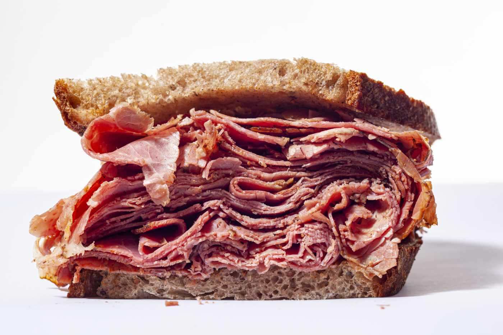

Pastrami Recipe

Pastrami Recipe
So what is pastrami? Simply put, it’s Jewish barbecue, a.k.a.
corned beef with chutzpah! You want the recipe, it’s on
this page, but first I have to tell you something.
The most revered pastrami is found at Katz’s Delicatessen in New York City.
Katz’s is a timeless throwback and is the site of Harry met Sally’s fake orgasm.
When you go, make sure to leave your diet behind and remember to say I’ll have what she’s having!
- 12 pounds beef brisket
- 1 gallon water
- 2 cups white sugar
- 1 cups koshar salt
- The most revered pastrami is found at Katz’s Delicatessen in New York City. Katz’s is a timeless throwback
and is the site of Harry met Sally’s fake orgasm. When you go, make sure to leave your diet behind and remember
to say I’ll have what she’s having!
- Bring water to a boil in a large pot on the stovetop. Remove from heat; as it starts to cool down, add white sugar,
kosher salt, garlic, and pink curing salt./li>
- Use 1/2 of the spice mixture to coat the brisket; seal in a food saver bag. Reserve remaining spice mixture. Place brisket
in a sous vide at 137 degrees F (58 degrees C) for 18 hours.
- Place a wire rack into the smoker. Add wood chips according to manufacturer's directions and heat to 225 degrees F (107 degrees C).
- Smoke brisket until browned, tender, and no longer pink in the center, about 5 hours. Pull brisket from the smoker and let rest for 15 minutes before slicing.